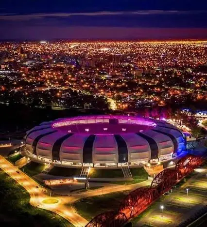
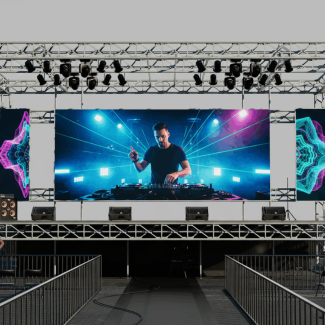
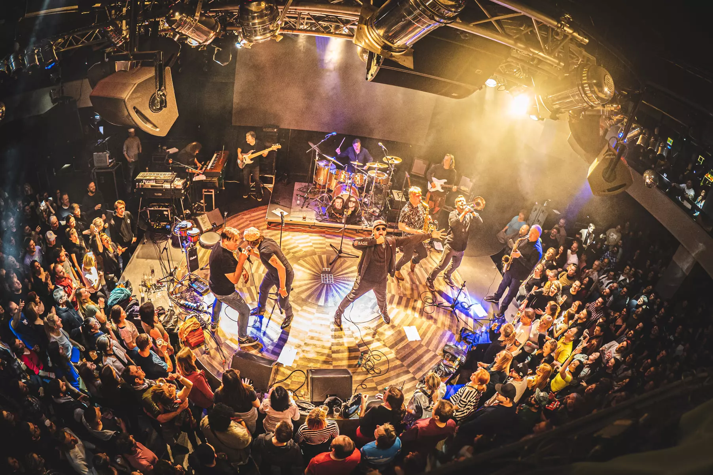

Rock Nacional
Concierto de Rock
Estadio Madre de Ciudades
Un escenario al aire libre para vivir el pogo más grande del festival con los clásicos del rock nacional.
Tres noches inolvidables bajo las estrellas con los mejores artistas locales. Rock, electrónica y jazz para todos!
Sonidos de la Ciudad es más que un festival: es un viaje sonoro por la identidad musical de Santiago del Estero. Durante tres noches, tres escenarios únicos de la ciudad se transforman en templos del rock, la electrónica y el jazz, reuniendo talento local y tributos imperdibles bajo las estrellas.

Estadio Madre de Ciudades
Un escenario al aire libre para vivir el pogo más grande del festival con los clásicos del rock nacional.

Complejo Urbano
Espacio inmersivo con pantallas LED y sonido envolvente para bailar hasta el amanecer.

Bar Cultural La Ferretería
Ambiente íntimo y sofisticado para disfrutar de melodías e improvisación en vivo.
Tres noches de música en vivo. Consultá los horarios de cada escenario y no te pierdas a tus artistas favoritos.
Ver cronogramaGeneral, VIP y Palco. Comprá online y asegurá tu lugar en cualquiera de los tres escenarios del festival.
Comprar entradasTres escenarios distribuidos en Santiago del Estero. Encontrá cómo llegar a cada uno con el mapa interactivo.
Ver ubicaciónTodo está pensado para que vivas la música en vivo de la mejor manera.